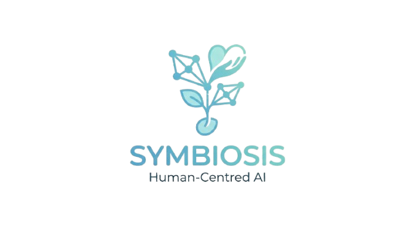

Our research phase opened our eyes to just how fast this field is moving. By studying existing literature, we discovered that AI models are already achieving incredible accuracy—sometimes reaching as high as ninety-nine percent—when they are trained on specific facial muscle patterns known as Action Units. This realization gave us a solid scientific foundation to build upon, as it confirmed that the subtle cues we are trying to track are clinically validated markers of physical distress. We learned that by focusing on the Facial Action Coding System, we can turn a simple video feed into a powerful diagnostic tool that standardizes how pain is interpreted across different hospital environments.
One of the biggest lessons we took away from our research is the importance of high-quality data. We realized that for a system like this to be reliable, it must be free from bias and errors that can occur during data input. We also explored the concept of a multimodal approach, which involves combining facial cues with other physiological signals like heart rate or muscle tension. While our current focus is on visual decoding, our research has paved the way for future versions of the project that will integrate even more data points to ensure that no patient's pain goes unnoticed or misunderstood.